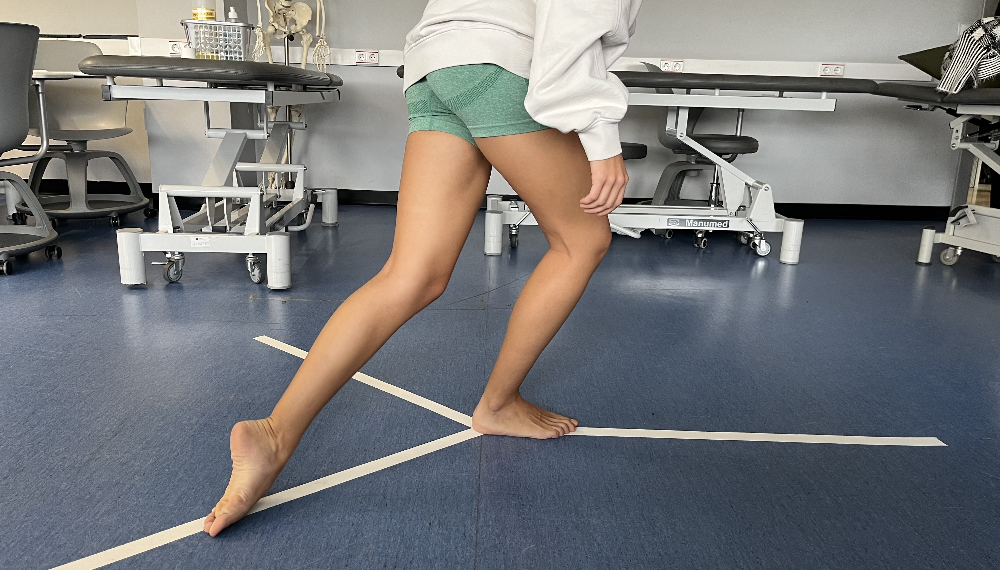

La ciencia detrás de tu recuperación.
Doctora en Biomedicina especializada en fisioterapia deportiva, ecografía musculoesquelética y salud de la mujer deportista.

Añade perfil.jpg
Doctora en Biomedicina especializada en fisioterapia deportiva, ecografía musculoesquelética y salud de la mujer deportista.
Añade perfil.jpg
Fisioterapeuta y doctora en Biomedicina, con más de una década combinando práctica clínica, docencia universitaria e investigación. Traduzco la evidencia científica en resultados reales para pacientes y deportistas.
Coordino las relaciones internacionales del Departamento de Fisioterapia en la Universidad Europea de Madrid y colaboro con universidades europeas en formación de posgrado e investigación.

Prevención, tratamiento y Return to Play desde la evidencia.
Formación de grado, posgrado y programas internacionales.
Proyectos europeos de práctica basada en la evidencia.
Diagnóstico por imagen para el seguimiento objetivo de lesiones y la toma de decisiones clínicas en deportistas de alto nivel.
Acompañamiento desde la lesión hasta el alta deportiva, con programas de pretemporada para reducir el riesgo.
Protocolos basados en la evidencia para instituciones deportivas, centros de salud y equipos profesionales.
Clases de grado y posgrado, y programas de formación internacional en fisioterapia deportiva.

Clases de grado y posgrado en universidades como Alfonso X el Sabio, Savonia (Finlandia) y Lunex (Luxemburgo).
Máster en Fisioterapia Deportiva, UAX.
Práctica Basada en la Evidencia aplicada a la fisioterapia, en colaboración con universidades europeas.
ENPHE Spring Seminar, Aalborg (Dinamarca).
Fisioterapia con enfoque biopsicosocial y foco en la autonomía del paciente.
Investigación sobre vendajes y lesiones de tobillo.Propuestas, proyectos de investigación o una consulta clínica. Escríbeme.
lorena.canosa.c@gmail.com